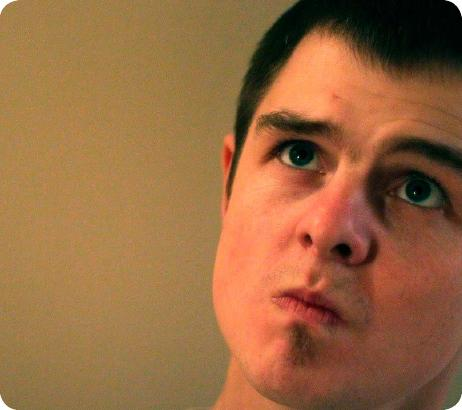

Date: Oct 10, 2013
Старая гвардия
В этот раз мне захотелось задать несколько вопросов человеку, известному любому пятикурснику факультета, некогда капитану команды КВН «Г аага» – Жене Бондарю. Стоит упомянуть, что наша газета уже как-то писала о нем – посмотрим же, что успело измениться за это время.
Что дал, чему научил тебя КВН?
Быстро отвечать на вопросы и пытаться шутить там, где этого делать не стоит.
На данный момент ты еще играешь?
Нет.
Какое место заняла твоя группа на капустнике?
Второе (Женя учился в 1-ой группе, не в 8-ой, как я сразу было подумала).
Чем занимаешься после окончания РФиКТ?
Делаю рекламу.
Не задумываешься ли ты, закончив магистратуру, заняться преподавательской деятельностью?
Нет, те, кто меня учил, никогда не поняли бы этого.
Считаешь ли ты, что радиофизики – люди с необычайным чувством юмора, или это просто случайности?
Считаю, что радиофизики - люди с необычайной выживаемостью.
Какой лабораторный практикум запомнился тебе больше всего?
Паяльники. ( =) *примечание верстальщика html)
Чем бы ты занялся, если бы вдруг отключили электричество?
Лег бы спать.
Что бы ты хотел сделать на факультете, на что когда-то не хватило времени/желания?
Сходить на все пары.
Ты хотя бы разок застревал в лифте?
Да, и не разок, один раз аж на четыре часа.
Твое пожелание радиофизику.
Понять как можно раньше, чем хочешь заниматься.
Поблагодарим Женю за его открытость и лаконичные ответы - на самом деле, он очень занятой человек. Пусть у него всё получится. С радостью ждем встречи на капустнике.